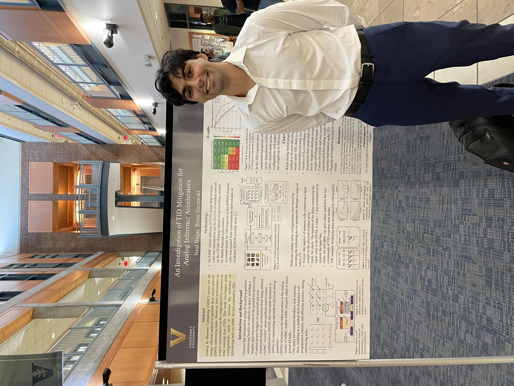

Overview
This project studies how total ionizing dose (TID) radiation perturbs analog weights stored in charge-trap memory and how those perturbations propagate to end-to-end neural network accuracy. The target hardware concept is a SONOS (silicon–oxide–nitride–oxide–silicon) analog in-memory computing (AIMC) accelerator that performs matrix-vector multiplications (MVMs) directly in memory, trading digital precision for major reductions in data movement and energy.
The core research question is practical: given a trained image classifier, what design choices in an AIMC deployment make inference robust over mission-relevant dose accumulation? We focus on TID-driven (1) mean shifts in the programmed drain current for each analog state and (2) increased state-dependent variability, then evaluate mitigation levers that a systems designer actually controls: how weights are mapped to device states, how many bits are stored per cell (bit slicing), how ADC ranges are calibrated per layer, and whether periodic refresh can reset accumulated radiation effects.
Technical Implementation
The workflow connects experimentally characterized SONOS radiation behavior to algorithm-level inference simulations. Published measurements characterize the TID response of 128 distinct conductance states (7 bits per cell) on a 40 nm SONOS array irradiated with Co-60 gamma rays up to 1.5 Mrad(Si), including post-irradiation annealing behavior. These measurements show strongly state-dependent shifts and reveal that the operating regime matters: weights encoded in weak inversion are substantially more disruptive than weights encoded in deep subthreshold or strong inversion.
I translated device-level TID response into inference-time weight perturbations using CrossSim Inference, a Python-based simulator for CNN-class inference. CrossSim models how a trained network is quantized, decomposed into analog MVM cores, and digitized with finite-resolution ADCs. It applies per-device programming error distributions, optional drift models, cycle-to-cycle read noise, ADC quantization, and array non-idealities (for example parasitic resistance via an internal circuit solver). ADC ranges can be calibrated per layer (and per bit slice) by collecting statistics on ADC inputs over a calibration dataset, which is critical because saturation and underutilization both translate to accuracy loss.
On top of the baseline analog error model, we inject TID as a state-dependent perturbation to each stored weight: a mean current shift plus an increase in random variability, interpolated across dose points when needed. Inference is then evaluated on standard image benchmarks (for example CIFAR-10 with ResNet-class models) to quantify how quickly accuracy degrades versus dose and which mapping choices delay that degradation the most.
Key Aspects
- Device-to-algorithm pipeline: measured SONOS TID response mapped into per-cell weight perturbations during inference simulation
- State-dependent modeling: captures both mean shift and variance growth as a function of stored analog level
- System-level levers tested: weight mapping strategy, negative-weight handling, ADC resolution and per-layer range calibration, and bit slicing (Nslices)
- Mitigation study: compares “high density” mappings (many bits per cell) versus resilient mappings (fewer bits per cell / more slices)
- Benchmarked end-to-end: evaluates inference accuracy degradation versus dose on CNN workloads rather than relying on device metrics alone
- Operational strategy: periodic refresh considered as a mission-level reset mechanism to counter both thermal drift and cumulative TID effects
Creative Process
The project started from a systems gap: radiation test data often stops at threshold-voltage shift plots, while machine learning deployment decisions need an accuracy-versus-dose curve under realistic accelerator constraints. The “creative” step was treating the mapping from digital weights to analog states as a first-class design variable, rather than a fixed implementation detail, then using a simulator that is explicit about where analog ends and digital begins.
Two insights guided the iteration. First, TID sensitivity is not uniform across the conductance window, so using all available levels can be worse than deliberately avoiding sensitive regions. Second, mitigation is rarely free: bit slicing and conservative mappings improve resilience but increase area/energy roughly in proportion to the number of slices, so the right answer depends on the mission environment and the acceptable efficiency penalty. The final deliverable is a structured way to compare those tradeoffs quantitatively using the same trained model and the same device characterization inputs.
